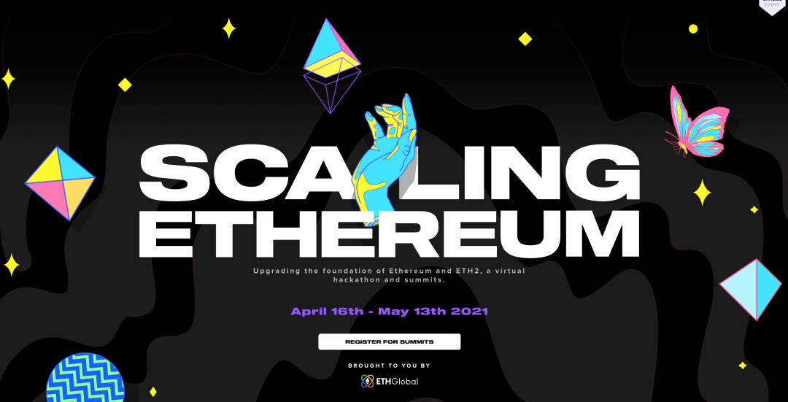
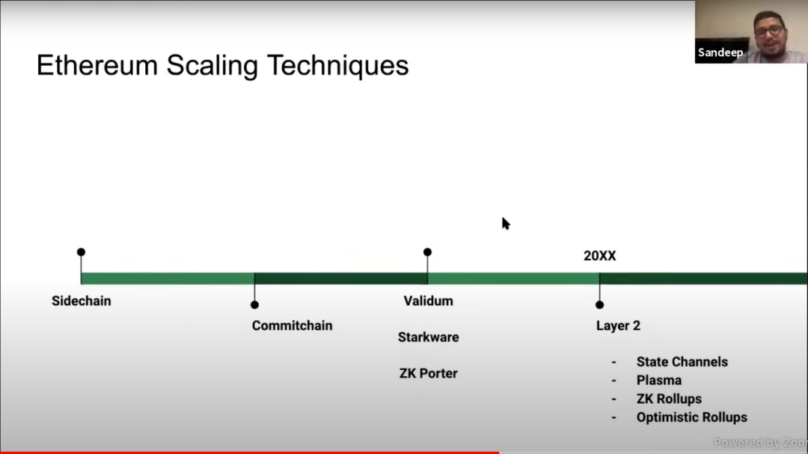
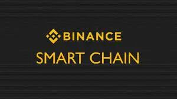
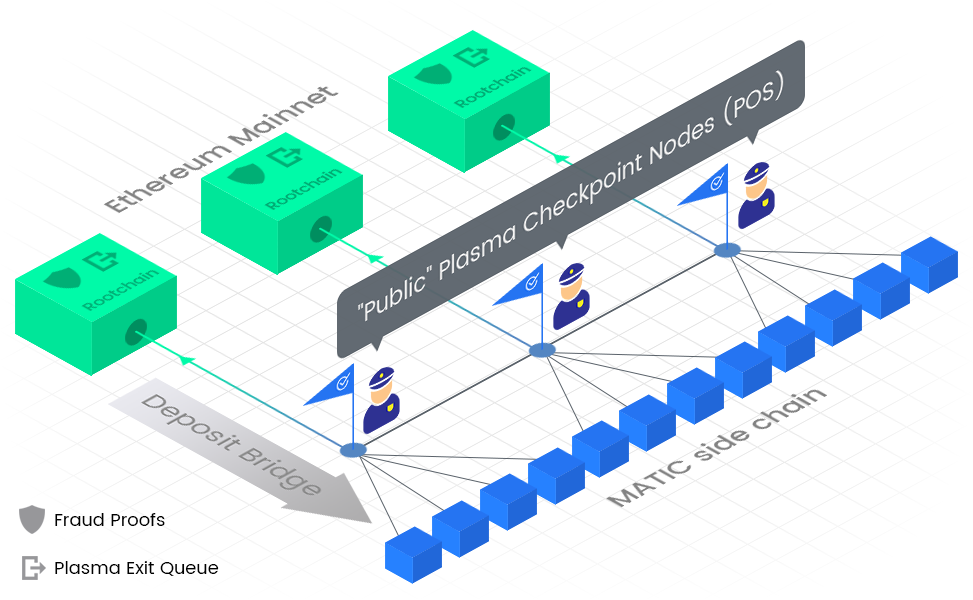
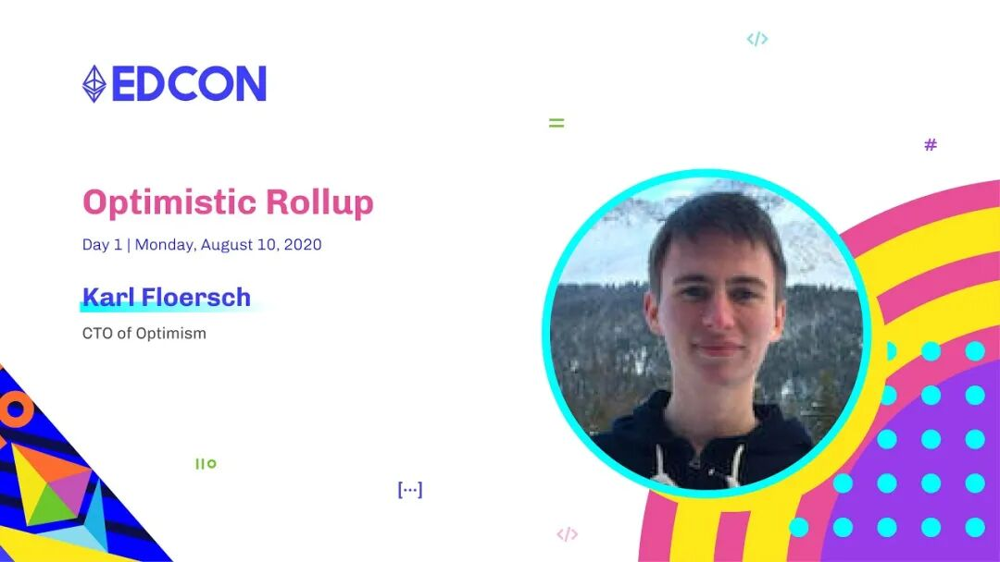
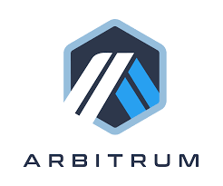
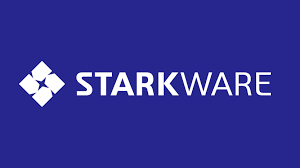
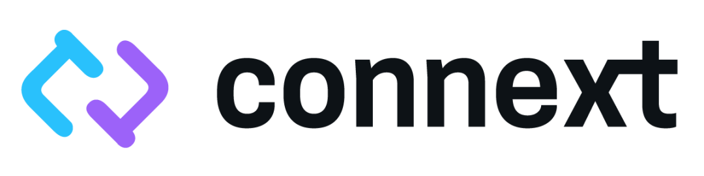

上周是ethglobal scaling hackathon的第一周，听了很多很多团队的讲座，感触很多，所以这周准备就写一期layer2的特辑。
什么是layer2？
其实很多人对于layer2的概念的概念并不是很清楚。严格来说，layer2可以是任何东西可以交易的地方，甚至binance，coinbase这种也可以算是广义上的layer2。
当然，这样的layer2需要用户完全信任这些中心化交易所，因此并不是我们所希望的layer2。
而我们通常意义上的layer2，其实从安全性，去中心化的角度考察，其实可以按照这张图从左到右来分类。

a) Sidechain
最左边的是sidechain。这里从用户量最多的基于Cosmos技术的BSC，Heco，以及一直难产的OKT，到小众的Xdai，到Sol，ftm，avalanche，near，harmony, eos, tron等等链，全部都属于这一种类型。

这里的sidechain，可以是evm compatible的，也可以是evm incompatible的。从ETH中心主义者来说，甚至BTC都可以算是一条sidechain。
所有的sidechain都有自己的共识机制，比如BSC，Heco， xdai的POA共识机制，到EOS, Tron的DPOS机制，到Sol的Proof of history，BTC的POW机制。
所有的sidechain也都有基于自己共识机制产生的区块，以及区块上独立的数据。这些数据并不需要同步到ETH链上。这些sidechain的安全性也完全取决于sidechain自己的共识机制。
举例来说，BSC等等POA的共识机制安全性，取决于那几个Authority节点是否会作恶。
EOS，Tron的DPOS机制也是类似，安全性取决于那几个超级节点是否会作恶。
BTC的安全性在这些里面显然是最高的，它的安全性取决于全世界是否会有51%以上的算力同时选择作恶。
b) Commit chain (Plasma)

所谓的Commit chain，是指一种特殊的sidechain。它不仅仅有自己的共识机制以及区块，它也会隔一段时间就把这些区块的数据全部都提交到ETH的主链上。
在Plasma这种Commit chain的implementation中，并不会它sidechain上的所有数据原封不动地全部提交上去。如果真的全部原封不动地提交上去，数据量就太大了，跟直接用ETH layer1就完全没有区别了。
Plasma采用的方案是，他会把所有的这些数据合起来取一个hash，然后只把这个hash value提交到ETH的主链上。由于hash的数据量要小得多，所以就极大程度上解决了scaling的问题。
然而Plasma这种方案也有一个致命的data availability的问题，就是在ETH主链上只有所有交易的打包起来的hash，而没有所有交易数据的完整数据。因此如果说Commit chain上有的validator不诚实，拒绝提供hash value对应的block数据，那用户就需要主动及时发现并且主动切换到另一个诚实的validator上。
具体可以看下面这篇Vitalik写的文章，非常深入地把这个问题讲清楚了。
https://vitalik.ca/general/2019/08/28/hybrid_layer_2.html
c) Optimism/Zk Rollup

Optimism/Zk Rollup很好地解决了上面的这个问题。他们的validator (Sequencer) 在提交数据到ETH layer1的时候，并不只是提交所有数据的一个hash值，而是会提交所有的交易数据的calldata，也就是所有的交易的输入数据。
我们知道，一个function call的input数据其实只占整个function运行中会产生数据的一小部分，因此这样的方式虽然要比一个hash值的数据量要大不少，但是也可以把数据量大大缩小。
而且最重要的是，这个方案解决了data availability的问题。由于所有的reply transaction的data都会存在layer1的链上，因此就算layer2链上的validator消失了，用户也可以根据layer1上的input data，replay所有的transaction，并且得到正确的链上的state。
而这里Optimism和Zk Rollup之间的区别在于，对于根据这些input data算出来的最终state的验证方式有所不同。
Optimism采用的方式是直接相信validator的计算结果。但是如果说有人submit了fraud proof来challenge计算结果，他们就会采用某种算法来验证究竟是validator有问题，还是那个submit fraud proof的人有问题，从而得到最终的结果。
Zk-rollup则用的是Zero knowledge的方式来直接验证计算的结果是否正确，而不需要这些challenge的过程，因此方案更加简单，但是技术上似乎更加复杂。目前zk-rollup还不支持智能合约，但是据说zksync团队今年5月份就会推出支持智能合约的zk-rollup，我个人认为如果他们真的可以推出这个方案，应该会是最有希望的方向。
目前optimism rollup主要是optimism团队，以及Arbitrium团队这两个团队在做。这两个团队谁最终将会胜出还很难说。但是可以说optimism rollup这个方案，在zk-rollup的智能合约方案推出之前，是社区里呼声最高的方案。

d) Starkware

dydx团队采用的是Starkware的方案，他们也是一种offline data的方案（即不把所有可以用来验证transaction的数据都post到l1的方案）。
Starkware和Plasma方案的区别是，他们没有像Plasma那样，采用fraud proof的方式（类似于optimism，而不是zk-rollup）来验证那个hash的结果，而是采用Zero knowledge的方式来验证hash的结果。因此会相比Plasma更加安全一些。
e) Skale
根据Polygon的团队来说，Skale的方案似乎介于Plasma和Sidechain的方案之间，但是具体是什么原理我实在没有听懂。。。。我感觉社区整体对于这个项目没有对optimism rollup那么的重视。
f) zkswap/loopring
这两个项目应该算是layer2的具体dapp，而并不是一个general solution。在我看来，一旦zksync的智能合约版本推出，这两个项目基本也就可以退出历史舞台了。
g) Connext

这个项目非常有意思，它是一个用于链接各种sidechain，l1, l2的资产转移的一个项目。目前它已经成功帮助xdai和bsc之间互相bridge资产。由于在这个方面的项目只有它一个，因此未来这个项目将会成为一个至关重要的piece，非常期待它的后续发展。
h)总结
总之这周听完ethglobal hackathon的讲座，非常有收获。如果有兴趣的朋友，也可以自己去ethglobal的youtube上听取相关的讲座，信息量非常大，非常值得从这里学习技术最前沿的第一手资料！
https://scaling.ethglobal.co/